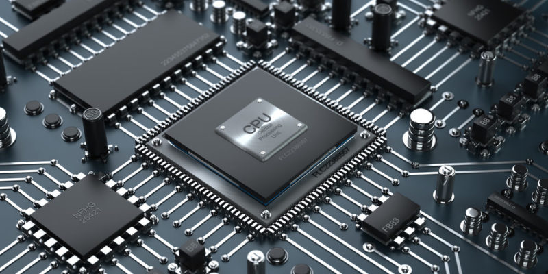
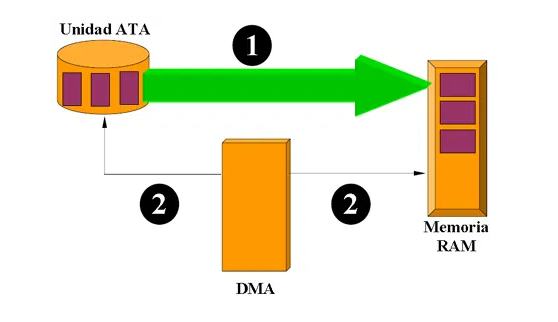

3.1 Chip set.
El chipset es el conjunto (set) de chips que se encargan de controlar determinadas funciones del ordenador, como la forma en que interacciona el microprocesador con la memoria o la caché, o el control de los puertos y slots ISA, PCI, AGP, USB entre otros. Al chipset también se le conoce como el núcleo de la Motherboard (tarjeta Madre).
Un chipset es un grupo de chips que trabajan en forma conjunta para poder llevar a cabo tareas predeterminadas y su misión primordial es comunicar todos los elementos que componen el Sistema.
El chipset es el conjunto de circuitos que nos encontramos sobre la placa base. Se encarga de conectar los distintos elementos que se encuentran en el interior de la CPU.
Unidad Central de Procesamiento (CPU)

La unidad central de procesamiento (conocida por las siglas CPU, del inglés: Central Processing Unit), es el hardware dentro de un ordenador u otros dispositivos programables, su trabajo es interpretar las instrucciones de un programa informático mediante la realización de las operaciones básicas aritméticas, lógicas y externas (provenientes de la unidad de entrada/salida). Su diseño y avance ha variado notablemente desde su creación, el cual era algo demasiado grande y que se calentaba mucho, a la actualidad, que es pequeño, y sí se calienta pero no demasiado como en la antigüedad.
ACCESO DIRECTO A MEMORIA (DMA).

El acceso directo a memoria (DMA, del inglés direct memory access) permite a cierto tipo de componentes de una computadora acceder a la memoria del sistema para leer o escribir independientemente de la unidad central de procesamiento (CPU). Muchos sistemas hardware utilizan DMA, incluyendo controladores de unidades de disco, tarjetas gráficas y tarjetas de sonido. DMA es una característica esencial en todos los ordenadores modernos, ya que permite a dispositivos de diferentes velocidades comunicarse sin someter a la CPU a una carga masiva de interrupciones.